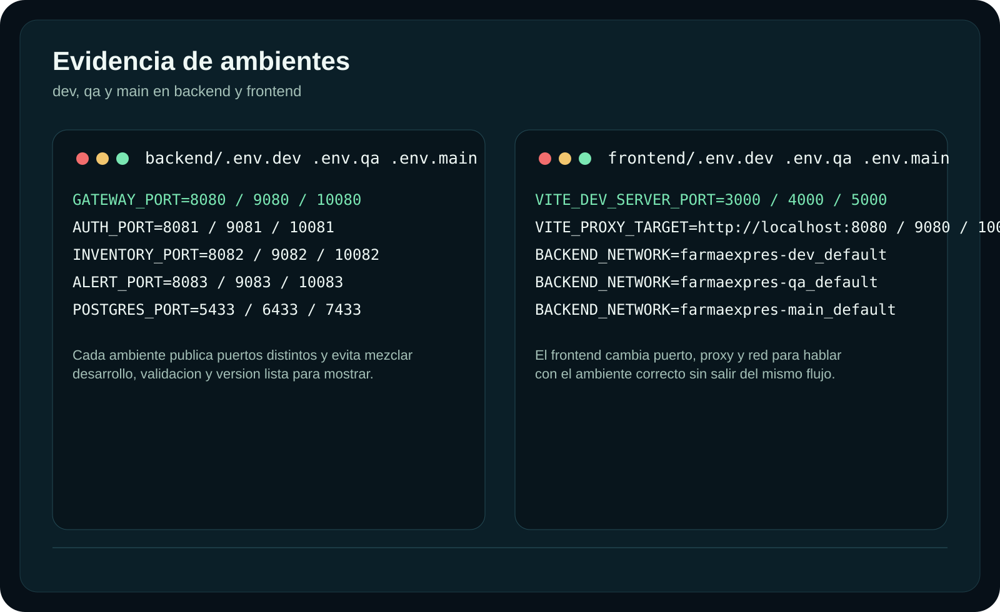
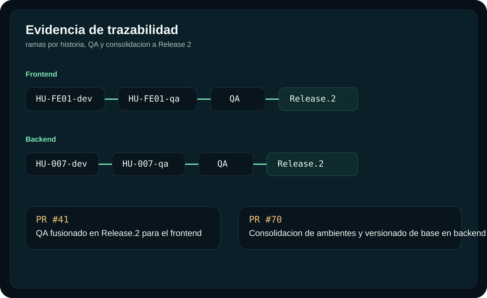
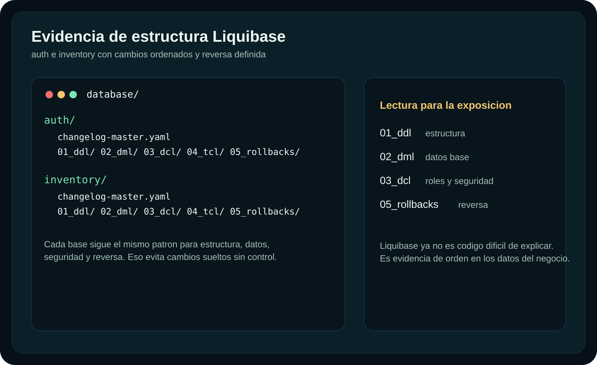
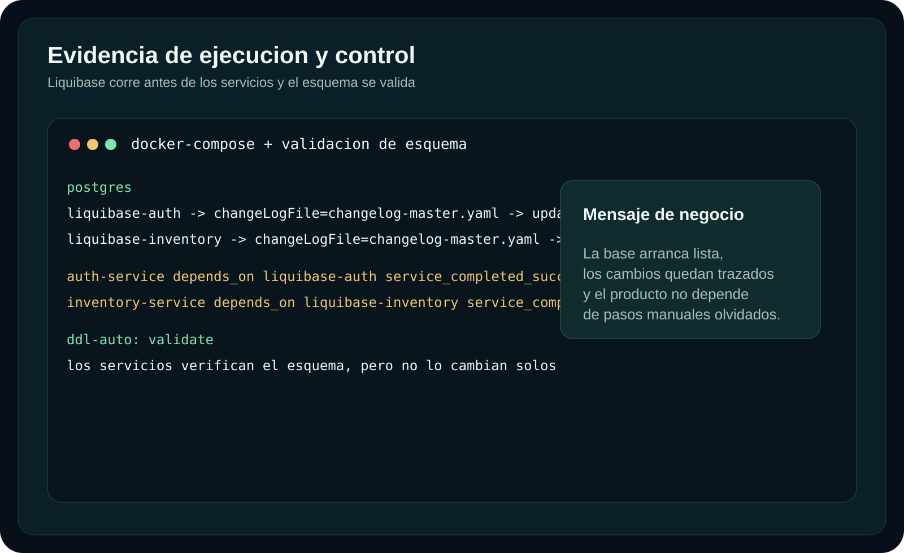

Versiona
Cada cambio queda documentado, no disperso en scripts sueltos.
Release 2
FarmaExpres sirve para administrar productos, usuarios, inventario, movimientos y alertas desde una sola plataforma clara y entendible.
Administrador, farmaceutico y auditor en un mismo flujo.
Ambientes separados para desarrollar, validar y liberar.
Base de datos versionada para crecer sin perder control.
Problematica
El problema no es solo registrar medicamentos. El problema es decidir bien cuando el inventario no es claro, los movimientos no tienen trazabilidad y las alertas llegan tarde.
Control diario
Seguridad por rol
Trazabilidad real
Etapa 1
Muestra como la plataforma ordena la operacion y hace que cada rol entienda exactamente que puede hacer.
Falta adjuntar este clip.
La estructura ya esta lista para incorporarlo.Etapa 2
Se construye y se prueba rapido.
Backend 8080 / Frontend 3000Se valida antes de prometer una entrega.
Backend 9080 / Frontend 4000Queda la version estable para mostrar y sostener.
Backend 10080 / Frontend 5000Auth 8081 / 9081 / 10081
Inventory 8082 / 9082 / 10082
Alert 8083 / 9083 / 10083
Postgres 5433 / 6433 / 7433


La idea no es hablar de puertos. La idea es mostrar orden.
FarmaExpres separa desarrollo, validacion y liberacion para que un cambio nuevo no dañe lo que ya esta listo para mostrar.
HU-FE01-dev
HU-FE01-qa
QA
Release.2
Frontend: PR #41 fusiona QA en Release.2.
Backend: PR #70 consolida ambientes y versionado de base de datos en Release.2.
Etapa 3
Liquibase es la bitacora oficial de la base de datos. Hace que cada cambio quede registrado, se aplique en orden y no dependa de pasos manuales olvidados.


Cada cambio queda documentado, no disperso en scripts sueltos.
La base arranca lista antes de que los servicios entren en operacion.
Los microservicios verifican el esquema en vez de modificarlo sin control.
Tambien deja camino de reversa para cambios que necesiten correccion.
Autenticacion e inventario evolucionan por separado, pero con la misma disciplina.
El mensaje es simple: los datos del negocio tambien estan protegidos.
Cierre
FarmaExpres demuestra operacion clara, crecimiento ordenado y datos confiables. Eso es lo que hace que la entrega sea entendible y solida.